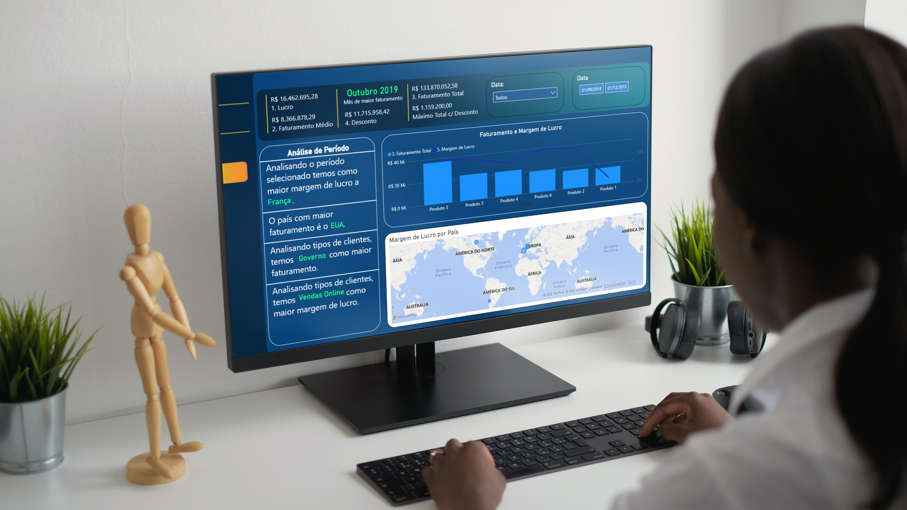

- Home
- >
- Portfólio
- >
- Todos os Projetos
- >
- Tratamento e Manipulação de Dados
Power BI e os Dados
Descrição do projeto
Para ser sincero, eu nunca tinha tocado em Power BI até começar a fazer esse projeto. Quando eu estava montando o meu Linkedin, recebi a notificação que ia ter um intensivão gratuito no canal Excelência Operacional, em que iríamos desenvolver uma dashboard no Power BI. O projeto consiste em alguns dados aleatórios empresariais provenientes de vários lugares do mundo. Nesse caso, os dados possuêm teor financeiro, e no projeto trabalhamos com questões como Margem de Lucro e Faturamento Total.
Os dados utilizados foram provenientes do Excel, mas eu poderia ter usado do Banco de Dados, por exemplo. Além da página principal do projeto, trabalhei ainda com duas páginas extras para me auxiliar no que é chamado de "Dicas de Ferramenta" no Power BI.
Durante a live, o que guiou a construção do projeto foram essas 10 perguntas acima. O instrutor mostrou várias ferramentas que podemosar usar no Power BI. Eu gostei do resultado, apesar de nunca ter feito um tipo de projeto como esse. A experiência me ensinou a usar uma ferramenta que será muito importante no caminho que estou trilhando, já que a faculdade que curso é sobre dados também.
Clique aqui para acessar este projeto no Github!
← Todos os Projetos
← Portfólio
← Home